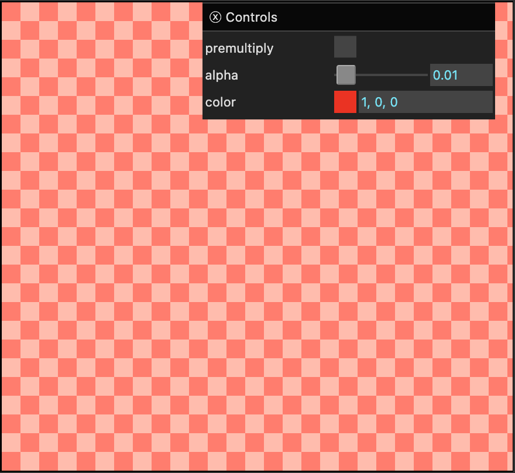

透明度和混合很难讲清楚，因为在不同的场景下，需要做的事情往往不同。因此，本文将主要是一次 WebGPU 功能的介绍，以便我们在介绍具体技术时可以回过头来参考。
alphaMode首先我们需要知道，WebGPU 内部有透明度和混合，画布和 HTML 页面之间也有透明度和混合。
默认情况下，WebGPU 画布是不透明的。它的 alpha 通道会被忽略。要使其不被忽略，我们需要在调用 configure 时将 alphaMode 设置为 'premultiplied'。默认值是 'opaque'
context.configure({
device,
format: presentationFormat,
+ alphaMode: 'premultiplied',
});
理解 alphaMode: 'premultiplied' 的含义很重要。它意味着，你放入画布的颜色值必须已经乘以了 alpha 值。
让我们制作一个最小的示例。我们只需要创建一个渲染通道并设置清除颜色。
async function main() {
const adapter = await navigator.gpu?.requestAdapter();
const device = await adapter?.requestDevice();
if (!device) {
fail('need a browser that supports WebGPU');
return;
}
// 从画布获取 WebGPU 上下文并配置它
const canvas = document.querySelector('canvas');
const context = canvas.getContext('webgpu');
const presentationFormat = navigator.gpu.getPreferredCanvasFormat();
context.configure({
device,
format: presentationFormat,
+ alphaMode: 'premultiplied',
});
const clearValue = [1, 0, 0, 0.01];
const renderPassDescriptor = {
label: 'our basic canvas renderPass',
colorAttachments: [
{
// view: <- 在渲染时填充
clearValue,
loadOp: 'clear',
storeOp: 'store',
},
],
};
function render() {
const encoder = device.createCommandEncoder({ label: 'clear encoder' });
const canvasTexture = context.getCurrentTexture();
renderPassDescriptor.colorAttachments[0].view =
canvasTexture.createView();
const pass = encoder.beginRenderPass(renderPassDescriptor);
pass.end();
const commandBuffer = encoder.finish();
device.queue.submit([commandBuffer]);
}
const observer = new ResizeObserver(entries => {
for (const entry of entries) {
const canvas = entry.target;
const width = entry.contentBoxSize[0].inlineSize;
const height = entry.contentBoxSize[0].blockSize;
canvas.width = Math.max(1, Math.min(width, device.limits.maxTextureDimension2D));
canvas.height = Math.max(1, Math.min(height, device.limits.maxTextureDimension2D));
render();
}
});
observer.observe(canvas);
}
我们还要将画布的 CSS 背景设置为一个灰色棋盘格
canvas {
background-color: #404040;
background-image:
linear-gradient(45deg, #808080 25%, transparent 25%),
linear-gradient(-45deg, #808080 25%, transparent 25%),
linear-gradient(45deg, transparent 75%, #808080 75%),
linear-gradient(-45deg, transparent 75%, #808080 75%);
background-size: 32px 32px;
background-position: 0 0, 0 16px, 16px -16px, -16px 0px;
}
在此基础上，我们添加一个 UI，以便可以设置清除值的 alpha 和颜色，以及是否预乘
+ import GUI from '../3rdparty/muigui-0.x.module.js';
...
+ const color = [1, 0, 0];
+ const settings = {
+ premultiply: false,
+ color,
+ alpha: 0.01,
+ };
+ const gui = new GUI().onChange(render);
+ gui.add(settings, 'premultiply');
+ gui.add(settings, 'alpha', 0, 1);
+ gui.addColor(settings, 'color');
function render() {
const encoder = device.createCommandEncoder({ label: 'clear encoder' });
const canvasTexture = context.getCurrentTexture();
renderPassDescriptor.colorAttachments[0].view =
canvasTexture.createView();
+ const { alpha } = settings;
+ clearValue[3] = alpha;
+ if (settings.premultiply) {
+ // 用 alpha 预乘颜色
+ clearValue[0] = color[0] * alpha;
+ clearValue[1] = color[1] * alpha;
+ clearValue[2] = color[2] * alpha;
+ } else {
+ // 使用未预乘的颜色
+ clearValue[0] = color[0];
+ clearValue[1] = color[1];
+ clearValue[2] = color[2];
+ }
const pass = encoder.beginRenderPass(renderPassDescriptor);
pass.end();
const commandBuffer = encoder.finish();
device.queue.submit([commandBuffer]);
}
如果我们运行这个示例，希望你能看到一个问题
这里显示的颜色是未定义的！！！
在我的机器上，我得到了这些颜色

你看出哪里不对了吗？我们将 alpha 设置为 0.01。背景颜色应该是中灰和深灰。颜色设置为红色 (1, 0, 0)。在中灰/深灰的棋盘格上叠加 0.01 量的红色应该几乎察觉不到，所以为什么显示的是两个亮粉色调？
原因是，这是一种非法的颜色！。我们画布的颜色是 1, 0, 0, 0.01，但这不是预乘颜色。"预乘"意味着我们放入画布的颜色必须已经乘以了 alpha 值。如果 alpha 值为 0.01，则任何其他值都不应大于 0.01。
如果你点击 “premultiplied” 复选框，代码将预乘颜色。放入画布的值将是 0.01, 0, 0, 0.01，它将看起来正确，几乎察觉不到。
勾选 “premultiplied” 后，调整 alpha，你会看到随着 alpha 接近 1，它会渐变为红色。
注意：由于示例
1, 0, 0, 0.01是非法颜色，其显示方式是未定义的。浏览器如何处理非法颜色取决于浏览器本身，所以不要使用非法颜色并期望在不同设备上得到相同的结果。
假设我们的颜色是 1, 0.5, 0.25（橙色），我们希望它有 33% 的透明度，因此 alpha 为 0.33。那么，我们的"预乘颜色"将是
预乘后 --------------------------------- r = 1 * 0.33 = 0.33 g = 0.5 * 0.33 = 0.165 g = 0.25 * 0.33 = 0.0825 a = 0.33 = 0.33
如何获得预乘颜色取决于你自己。如果你有未预乘的颜色，在着色器中可以用如下代码进行预乘。
return vec4f(color.rgb * color.a, color.a)`;
我们在导入纹理文章中介绍的 copyExternalImageToTexture 函数接受一个 premultipliedAlpha: true 选项。（见下文）这意味着当你调用 copyExternalImageToTexture 将图像加载到纹理时，你可以告诉 WebGPU 在将图像复制到纹理时为你预乘颜色。这样当你调用 textureSample 时，得到的结果已经是预乘的。
本节的要点是
解释 alphaMode: 'premultiplied' WebGPU 画布配置选项。
这使 WebGPU 画布可以具有透明度
介绍预乘 alpha 颜色的概念
如何获得预乘颜色取决于你。在上面的示例中，我们在 JavaScript 中创建了一个预乘的 clearValue。
我们也可以从片段着色器（和/或其他着色器）返回颜色。我们可以向这些着色器提供预乘颜色。我们可以在着色器本身中进行乘法运算。我们可以运行一个后处理通道来预乘颜色。重要的是，如果使用 alphaMode: 'premultiplied'，画布中的颜色必须以某种方式最终是预乘的。
关于其他预乘与未预乘颜色的好参考： GPUs prefer premultiplication。
discard 是 WGSL 中的一条语句，你可以在片段着色器中使用它来丢弃当前片段，换句话说就是不绘制该像素。
让我们以阶段间变量文章中，使用 @builtin(position) 在片段着色器中绘制棋盘格的示例为基础。
不是绘制双色棋盘格，而是对两种情况之一进行 discard。
@fragment fn fs(fsInput: OurVertexShaderOutput) -> @location(0) vec4f {
- let red = vec4f(1, 0, 0, 1);
let cyan = vec4f(0, 1, 1, 1);
let grid = vec2u(fsInput.position.xy) / 8;
let checker = (grid.x + grid.y) % 2 == 1;
+ if (checker) {
+ discard;
+ }
+
+ return cyan;
- return select(red, cyan, checker);
}
还有一些其他更改，我们添加上面 CSS 使画布具有 CSS 棋盘格背景。我们还要设置 alphaMode: 'premultiplied'。并将 clearValue 设置为 [0, 0, 0, 0]
context.configure({
device,
format: presentationFormat,
+ alphaMode: 'premultiplied',
});
...
const renderPassDescriptor = {
label: 'our basic canvas renderPass',
colorAttachments: [
{
// view: <- 在渲染时填充
- clearValue: [0.3, 0.3, 0.3, 1],
+ clearValue: [0, 0, 0, 0],
loadOp: 'clear',
storeOp: 'store',
},
],
};
...
你应该看到每隔一个方块是"透明"的，因为它根本没有被绘制。
在用于透明度的着色器中，根据 alpha 值进行 discard 是很常见的。类似这样
@fragment fn fs(fsInput: OurVertexShaderOutput) -> @location(0) vec4f {
let color = ... compute a color ....
if (color.a < threshold) {
discard;
}
return color;
}
其中 threshold 可能来自 uniform、常量或其他合适的值。
这最常用于精灵图和树叶、草叶等，因为如果我们在绘制时使用深度纹理，就像在正交投影文章中介绍的那样，那么当我们绘制一个精灵、树叶或草叶时，被绘制物体后面的任何精灵、树叶或草都不会被绘制，即使 alpha 值为 0，因为我们仍在更新深度纹理。因此，与其绘制不如 discard。我们将在另一篇文章中更详细地讨论这个问题。
最后我们来说混合设置。当你创建渲染管线时，对于片段着色器中的每个 target，你可以设置混合状态。换句话说，下面是一个我们之前其他示例中典型的管线
const pipeline = device.createRenderPipeline({
label: 'hardcoded textured quad pipeline',
layout: pipelineLayout,
vertex: {
module,
},
fragment: {
module,
targets: [
{
format: presentationFormat,
},
],
},
});
以下是添加了 target[0] 混合的版本。
const pipeline = device.createRenderPipeline({
label: 'hardcoded textured quad pipeline',
layout: pipelineLayout,
vertex: {
module,
},
fragment: {
module,
targets: [
{
format: presentationFormat,
+ blend: {
+ color: {
+ srcFactor: 'one',
+ dstFactor: 'one-minus-src-alpha'
+ },
+ alpha: {
+ srcFactor: 'one',
+ dstFactor: 'one-minus-src-alpha'
+ },
+ },
},
],
},
});
完整的默认设置如下：
blend: {
color: {
operation: 'add',
srcFactor: 'one',
dstFactor: 'zero',
},
alpha: {
operation: 'add',
srcFactor: 'one',
dstFactor: 'zero',
},
}
其中 color 是颜色中 rgb 部分发生的变化，alpha 是 a（alpha）部分发生的变化。
operation 可以是以下之一
srcFactor 和 dstFactor 各自可以是以下之一
大多数都很容易理解。可以把它想象成
result = operation((src * srcFactor), (dst * dstFactor))
其中 src 是你的片段着色器返回的值，dst 是你要绘制到的纹理中已有的值。
考虑默认情况，operation 为 'add'，srcFactor 为 'one'，dstFactor 为 'zero'。这给了我们
result = add((src * 1), (dst * 0)) result = add(src * 1, dst * 0) result = add(src, 0) result = src;
如你所见，默认结果最终就是 src。
在上述混合因子中，有 2 个提到常量，'constant' 和 'one-minus-constant'。这里提到的常量是通过渲染通道中的 setBlendConstant 命令设置的，默认为 [0, 0, 0, 0]。这让你可以在绘制之间改变它。
最常见的混合设置可能是
{
operation: 'add',
srcFactor: 'one',
dstFactor: 'one-minus-src-alpha'
}
这种模式最常与"预乘 alpha"一起使用，这意味着它期望"src"的 RGB 颜色已经按 alpha 值进行了"预乘"，如上所述。
让我们制作一个展示这些选项的示例。
首先，让我们用 JavaScript 创建两张带有 alpha 的 Canvas 2D 图像。我们将这些画布加载到 WebGPU 纹理中。
首先，是一段用于制作目标纹理图像的代码。
const hsl = (h, s, l) => `hsl(${h * 360 | 0}, ${s * 100}%, ${l * 100 | 0}%)`;
function createDestinationImage(size) {
const canvas = document.createElement('canvas');
canvas.width = size;
canvas.height = size;
const ctx = canvas.getContext('2d');
const gradient = ctx.createLinearGradient(0, 0, size, size);
for (let i = 0; i <= 6; ++i) {
gradient.addColorStop(i / -6, hsl(i / 6, 1, 0.5));
}
ctx.fillStyle = gradient;
ctx.fillRect(0, 0, size, size);
ctx.fillStyle = 'rgba(0, 0, 0, 255)';
ctx.globalCompositeOperation = 'destination-out';
ctx.rotate(Math.PI / -4);
for (let i = 0; i < size * 2; i += 32) {
ctx.fillRect(-size, i, size * 2, 16);
}
return canvas;
}
运行效果如下。
以下是用于制作源纹理图像的代码。
const hsla = (h, s, l, a) => `hsla(${h * 360 | 0}, ${s * 100}%, ${l * 100 | 0}%, ${a})`;
function createSourceImage(size) {
const canvas = document.createElement('canvas');
canvas.width = size;
canvas.height = size;
const ctx = canvas.getContext('2d');
ctx.translate(size / 2, size / 2);
ctx.globalCompositeOperation = 'screen';
const numCircles = 3;
for (let i = 0; i < numCircles; ++i) {
ctx.rotate(Math.PI * 2 / numCircles);
ctx.save();
ctx.translate(size / 6, 0);
ctx.beginPath();
const radius = size / 3;
ctx.arc(0, 0, radius, 0, Math.PI * 2);
const gradient = ctx.createRadialGradient(0, 0, radius / 2, 0, 0, radius);
const h = i / numCircles;
gradient.addColorStop(0.5, hsla(h, 1, 0.5, 1));
gradient.addColorStop(1, hsla(h, 1, 0.5, 0));
ctx.fillStyle = gradient;
ctx.fill();
ctx.restore();
}
return canvas;
}
运行效果如下。
现在我们有了两者，我们可以修改导入纹理文章中的画布导入示例。
首先，让我们制作两张画布图像
const size = 300; const srcCanvas = createSourceImage(size); const dstCanvas = createDestinationImage(size);
让我们修改着色器，因为我们将不再尝试将一个长平面绘制到远处，所以不需要将纹理坐标乘以 50。
@vertex fn vs(
@builtin(vertex_index) vertexIndex : u32
) -> OurVertexShaderOutput {
let pos = array(
// 第一个三角形
vec2f( 0.0, 0.0), // 中心
vec2f( 1.0, 0.0), // 右侧，中心
vec2f( 0.0, 1.0), // 中心，顶部
// 第二个三角形
vec2f( 0.0, 1.0), // 中心，顶部
vec2f( 1.0, 0.0), // 右侧，中心
vec2f( 1.0, 1.0), // 右侧，顶部
);
var vsOutput: OurVertexShaderOutput;
let xy = pos[vertexIndex];
vsOutput.position = uni.matrix * vec4f(xy, 0.0, 1.0);
- vsOutput.texcoord = xy * vec2f(1, 50);
+ vsOutput.texcoord = xy;
return vsOutput;
}
让我们更新 createTextureFromSource 函数，以便可以传入 premultipliedAlpha: true/false 并将其传递给 copyExternalTextureToImage。
- function copySourceToTexture(device, texture, source, {flipY} = {}) {
+ function copySourceToTexture(device, texture, source, {flipY, premultipliedAlpha} = {}) {
device.queue.copyExternalImageToTexture(
{ source, flipY, },
- { texture },
+ { texture, premultipliedAlpha },
{ width: source.width, height: source.height },
);
if (texture.mipLevelCount > 1) {
generateMips(device, texture);
}
}
然后，让我们用它来创建每种纹理的两个版本，一个是预乘的，一个是"未预乘"或"非预乘"的
const srcTextureUnpremultipliedAlpha =
createTextureFromSource(
device, srcCanvas,
{mips: true});
const dstTextureUnpremultipliedAlpha =
createTextureFromSource(
device, dstCanvas,
{mips: true});
const srcTexturePremultipliedAlpha =
createTextureFromSource(
device, srcCanvas,
{mips: true, premultipliedAlpha: true});
const dstTexturePremultipliedAlpha =
createTextureFromSource(
device, dstCanvas,
{mips: true, premultipliedAlpha: true});
注意：我们可以在着色器中添加一个选项来进行预乘，但这可能不太常见。更常见的是，根据你的需要，决定所有包含颜色的纹理是预乘的还是未预乘的。所以，我们保留不同的纹理，并添加 UI 选项来选择预乘的或未预乘的纹理。
我们需要为每个绘制准备一个 uniform 缓冲区，以防我们想在不同的地方绘制，或者纹理的大小不同。
function makeUniformBufferAndValues(device) {
// uniform 值在 float32 索引中的偏移量
const kMatrixOffset = 0;
// 创建一个用于 uniform 值的缓冲区
const uniformBufferSize =
16 * 4; // 矩阵是 16 个 32 位浮点数（每个 4 字节）
const buffer = device.createBuffer({
label: 'uniforms for quad',
size: uniformBufferSize,
usage: GPUBufferUsage.UNIFORM | GPUBufferUsage.COPY_DST,
});
// 创建一个类型化数组来保存 JavaScript 中 uniform 的值
const values = new Float32Array(uniformBufferSize / 4);
const matrix = values.subarray(kMatrixOffset, 16);
return { buffer, values, matrix };
}
const srcUniform = makeUniformBufferAndValues(device);
const dstUniform = makeUniformBufferAndValues(device);
我们需要一个采样器，而且每个纹理需要一个 bindGroup。这就引出了一个问题。bindGroup 需要一个 bindGroupLayout。本网站上大多数示例的布局来自管线，通过调用 somePipeline.getBindGroupLayout(groupNumber)。但在我们的例子中，我们将根据选择的混合状态设置来创建管线。所以在渲染之前，我们不会有管线来获取 bindGroupLayout。
我们可以在渲染时创建 bindGroup。或者，我们可以创建自己的 bindGroupLayout 并告诉管线使用它。这样我们可以在初始化时创建 bindGroup，并且它们将与使用相同 bindGroupLayout 的任何管线兼容。
创建 bindGroupLayout 和 pipelineLayout 的细节在另一篇文章中介绍。现在，下面是创建匹配着色器模块的代码
const bindGroupLayout = device.createBindGroupLayout({
entries: [
{ binding: 0, visibility: GPUShaderStage.FRAGMENT, sampler: { }, },
{ binding: 1, visibility: GPUShaderStage.FRAGMENT, texture: { } },
{ binding: 2, visibility: GPUShaderStage.VERTEX, buffer: { } },
],
});
const pipelineLayout = device.createPipelineLayout({
bindGroupLayouts: [
bindGroupLayout,
],
});
创建了 bindGroupLayout 后，我们可以用它来制作 bindGroup。
const sampler = device.createSampler({
magFilter: 'linear',
minFilter: 'linear',
mipmapFilter: 'linear',
});
const srcBindGroupUnpremultipliedAlpha = device.createBindGroup({
layout: bindGroupLayout,
entries: [
{ binding: 0, resource: sampler },
{ binding: 1, resource: srcTextureUnpremultipliedAlpha },
{ binding: 2, resource: { buffer: srcUniform.buffer }},
],
});
const dstBindGroupUnpremultipliedAlpha = device.createBindGroup({
layout: bindGroupLayout,
entries: [
{ binding: 0, resource: sampler },
{ binding: 1, resource: dstTextureUnpremultipliedAlpha },
{ binding: 2, resource: { buffer: dstUniform.buffer }},
],
});
const srcBindGroupPremultipliedAlpha = device.createBindGroup({
layout: bindGroupLayout,
entries: [
{ binding: 0, resource: sampler },
{ binding: 1, resource: srcTexturePremultipliedAlpha },
{ binding: 2, resource: { buffer: srcUniform.buffer }},
],
});
const dstBindGroupPremultipliedAlpha = device.createBindGroup({
layout: bindGroupLayout,
entries: [
{ binding: 0, resource: sampler },
{ binding: 1, resource: dstTexturePremultipliedAlpha },
{ binding: 2, resource: { buffer: dstUniform.buffer }},
],
});
现在我们有了 bindGroup 和纹理，让我们制作一个预乘纹理与未预乘纹理的数组，这样我们就可以轻松地选择一组或另一组
const textureSets = [
{
srcTexture: srcTexturePremultipliedAlpha,
dstTexture: dstTexturePremultipliedAlpha,
srcBindGroup: srcBindGroupPremultipliedAlpha,
dstBindGroup: dstBindGroupPremultipliedAlpha,
},
{
srcTexture: srcTextureUnpremultipliedAlpha,
dstTexture: dstTextureUnpremultipliedAlpha,
srcBindGroup: srcBindGroupUnpremultipliedAlpha,
dstBindGroup: dstBindGroupUnpremultipliedAlpha,
},
];
在我们的渲染通道描述符中，我们将提取 clearValue，以便更容易访问它
+ const clearValue = [0, 0, 0, 0];
const renderPassDescriptor = {
label: 'our basic canvas renderPass',
colorAttachments: [
{
// view: <- 在渲染时填充
- clearValue: [0.3, 0.3, 0.3, 1];
+ clearValue,
loadOp: 'clear',
storeOp: 'store',
},
],
};
我们需要两个渲染管线。一个用于绘制目标纹理，这个不使用混合。注意我们传入的是 pipelineLayout 而不是像之前大多数示例那样使用 auto。
const dstPipeline = device.createRenderPipeline({
label: 'hardcoded textured quad pipeline',
layout: pipelineLayout,
vertex: {
module,
},
fragment: {
module,
targets: [ { format: presentationFormat } ],
},
});
另一个管线将在渲染时根据我们选择的混合选项创建
const color = {
operation: 'add',
srcFactor: 'one',
dstFactor: 'one-minus-src',
};
const alpha = {
operation: 'add',
srcFactor: 'one',
dstFactor: 'one-minus-src',
};
function render() {
...
const srcPipeline = device.createRenderPipeline({
label: 'hardcoded textured quad pipeline',
layout: pipelineLayout,
vertex: {
module,
},
fragment: {
module,
targets: [
{
format: presentationFormat,
blend: {
color,
alpha,
},
},
],
},
});
为了渲染，我们选择一个纹理集，然后使用 dstPipeline（无混合）渲染目标纹理，然后在其上使用 srcPipeline（带混合）渲染源纹理
+ const settings = {
+ textureSet: 0,
+ };
function render() {
const srcPipeline = device.createRenderPipeline({
label: 'hardcoded textured quad pipeline',
layout: pipelineLayout,
vertex: {
module,
},
fragment: {
module,
targets: [
{
format: presentationFormat,
blend: {
color,
alpha,
},
},
],
},
});
+ const {
+ srcTexture,
+ dstTexture,
+ srcBindGroup,
+ dstBindGroup,
+ } = textureSets[settings.textureSet];
const canvasTexture = context.getCurrentTexture();
// 从画布上下文获取当前纹理，并
// 将其设置为要渲染的纹理。
renderPassDescriptor.colorAttachments[0].view =
canvasTexture.createView();
+ function updateUniforms(uniform, canvasTexture, texture) {
+ const projectionMatrix = mat4.ortho(0, canvasTexture.width, canvasTexture.height, 0, -1, 1);
+
+ mat4.scale(projectionMatrix, [texture.width, texture.height, 1], uniform.matrix);
+
+ // 将值从 JavaScript 复制到 GPU
+ device.queue.writeBuffer(uniform.buffer, 0, uniform.values);
+ }
+ updateUniforms(srcUniform, canvasTexture, srcTexture);
+ updateUniforms(dstUniform, canvasTexture, dstTexture);
const encoder = device.createCommandEncoder({ label: 'render with blending' });
const pass = encoder.beginRenderPass(renderPassDescriptor);
+ // 绘制目标
+ pass.setPipeline(dstPipeline);
+ pass.setBindGroup(0, dstBindGroup);
+ pass.draw(6); // 调用顶点着色器 6 次
+
+ // 绘制源
+ pass.setPipeline(srcPipeline);
+ pass.setBindGroup(0, srcBindGroup);
+ pass.draw(6); // 调用顶点着色器 6 次
pass.end();
const commandBuffer = encoder.finish();
device.queue.submit([commandBuffer]);
}
现在让我们制作一些 UI 来设置这些值
+ const operations = [
+ 'add',
+ 'subtract',
+ 'reverse-subtract',
+ 'min',
+ 'max',
+ ];
+
+ const factors = [
+ 'zero',
+ 'one',
+ 'src',
+ 'one-minus-src',
+ 'src-alpha',
+ 'one-minus-src-alpha',
+ 'dst',
+ 'one-minus-dst',
+ 'dst-alpha',
+ 'one-minus-dst-alpha',
+ 'src-alpha-saturated',
+ 'constant',
+ 'one-minus-constant',
+ ];
const color = {
operation: 'add',
srcFactor: 'one',
dstFactor: 'one-minus-src',
};
const alpha = {
operation: 'add',
srcFactor: 'one',
dstFactor: 'one-minus-src',
};
const settings = {
textureSet: 0,
};
+ const gui = new GUI().onChange(render);
+ gui.add(settings, 'textureSet', ['premultiplied alpha', 'un-premultiplied alpha']);
+ const colorFolder = gui.addFolder('color');
+ colorFolder.add(color, 'operation', operations);
+ colorFolder.add(color, 'srcFactor', factors);
+ colorFolder.add(color, 'dstFactor', factors);
+ const alphaFolder = gui.addFolder('alpha');
+ alphaFolder.add(alpha, 'operation', operations);
+ alphaFolder.add(alpha, 'srcFactor', factors);
+ alphaFolder.add(alpha, 'dstFactor', factors);
如果操作是 'min' 或 'max'，我们必须将 srcFactor 和 dstFactor 设置为 'one'，否则会出错
+ function makeBlendComponentValid(blend) {
+ const { operation } = blend;
+ if (operation === 'min' || operation === 'max') {
+ blend.srcFactor = 'one';
+ blend.dstFactor = 'one';
+ }
+ }
function render() {
+ makeBlendComponentValid(color);
+ makeBlendComponentValid(alpha);
+ gui.updateDisplay();
...
我们也可以设置混合常量，以便在选择 'constant' 或 'one-minus-constant' 作为因子时使用。
+ const constant = {
+ color: [1, 0.5, 0.25],
+ alpha: 1,
+ };
const settings = {
textureSet: 0,
};
const gui = new GUI().onChange(render);
gui.add(settings, 'textureSet', ['premultiplied alpha', 'un-premultiplied alpha']);
...
+ const constantFolder = gui.addFolder('constant');
+ constantFolder.addColor(constant, 'color');
+ constantFolder.add(constant, 'alpha', 0, 1);
...
function render() {
...
const pass = encoder.beginRenderPass(renderPassDescriptor);
// 绘制目标
pass.setPipeline(dstPipeline);
pass.setBindGroup(0, dstBindGroup);
pass.draw(6); // 调用顶点着色器 6 次
// 绘制源
pass.setPipeline(srcPipeline);
pass.setBindGroup(0, srcBindGroup);
+ pass.setBlendConstant([...constant.color, constant.alpha]);
pass.draw(6); // 调用顶点着色器 6 次
pass.end();
}
由于有 13 * 13 * 5 * 13 * 13 * 5 种可能的设置，太多无法一一探索，所以我们提供了一系列预设。如果没有 alpha 设置，我们就重复使用 color 设置。
+ const presets = {
+ 'default (copy)': {
+ color: {
+ operation: 'add',
+ srcFactor: 'one',
+ dstFactor: 'zero',
+ },
+ },
+ 'premultiplied blend (source-over)': {
+ color: {
+ operation: 'add',
+ srcFactor: 'one',
+ dstFactor: 'one-minus-src-alpha',
+ },
+ },
+ 'un-premultiplied blend': {
+ color: {
+ operation: 'add',
+ srcFactor: 'src-alpha',
+ dstFactor: 'one-minus-src-alpha',
+ },
+ },
+ 'destination-over': {
+ color: {
+ operation: 'add',
+ srcFactor: 'one-minus-dst-alpha',
+ dstFactor: 'one',
+ },
+ },
+ 'source-in': {
+ color: {
+ operation: 'add',
+ srcFactor: 'dst-alpha',
+ dstFactor: 'zero',
+ },
+ },
+ 'destination-in': {
+ color: {
+ operation: 'add',
+ srcFactor: 'zero',
+ dstFactor: 'src-alpha',
+ },
+ },
+ 'source-out': {
+ color: {
+ operation: 'add',
+ srcFactor: 'one-minus-dst-alpha',
+ dstFactor: 'zero',
+ },
+ },
+ 'destination-out': {
+ color: {
+ operation: 'add',
+ srcFactor: 'zero',
+ dstFactor: 'one-minus-src-alpha',
+ },
+ },
+ 'source-atop': {
+ color: {
+ operation: 'add',
+ srcFactor: 'dst-alpha',
+ dstFactor: 'one-minus-src-alpha',
+ },
+ },
+ 'destination-atop': {
+ color: {
+ operation: 'add',
+ srcFactor: 'one-minus-dst-alpha',
+ dstFactor: 'src-alpha',
+ },
+ },
+ 'additive (lighten)': {
+ color: {
+ operation: 'add',
+ srcFactor: 'one',
+ dstFactor: 'one',
+ },
+ },
+ };
...
const settings = {
textureSet: 0,
+ preset: 'default (copy)',
};
const gui = new GUI().onChange(render);
gui.add(settings, 'textureSet', ['premultiplied alpha', 'un-premultiplied alpha']);
+ gui.add(settings, 'preset', Object.keys(presets))
+ .name('blending preset')
+ .onChange(presetName => {
+ const preset = presets[presetName];
+ Object.assign(color, preset.color);
+ Object.assign(alpha, preset.alpha || preset.color);
+ gui.updateDisplay();
+ });
...
我们也可以让你选择画布配置的 alphaMode。
const settings = {
+ alphaMode: 'premultiplied',
textureSet: 0,
preset: 'default (copy)',
};
const gui = new GUI().onChange(render);
+ gui.add(settings, 'alphaMode', ['opaque', 'premultiplied']).name('canvas alphaMode');
gui.add(settings, 'textureSet', ['premultiplied alpha', 'un-premultiplied alpha']);
...
function render() {
...
+ context.configure({
+ device,
+ format: presentationFormat,
+ alphaMode: settings.alphaMode,
+ });
const canvasTexture = context.getCurrentTexture();
// 从画布上下文获取当前纹理，并
// 将其设置为要渲染的纹理。
renderPassDescriptor.colorAttachments[0].view =
canvasTexture.createView();
最后，让我们让你选择渲染通道的 clearValue。
+ const clear = {
+ color: [0, 0, 0],
+ alpha: 0,
+ premultiply: true,
+ };
const settings = {
alphaMode: 'premultiplied',
textureSet: 0,
preset: 'default (copy)',
};
const gui = new GUI().onChange(render);
...
+ const clearFolder = gui.addFolder('clear color');
+ clearFolder.add(clear, 'premultiply');
+ clearFolder.add(clear, 'alpha', 0, 1);
+ clearFolder.addColor(clear, 'color');
function render() {
...
const canvasTexture = context.getCurrentTexture();
// 从画布上下文获取当前纹理，并
// 将其设置为要渲染的纹理。
renderPassDescriptor.colorAttachments[0].view =
canvasTexture.createView();
+ {
+ const { alpha, color, premultiply } = clear;
+ const mult = premultiply ? alpha : 1;
+ clearValue[0] = color[0] * mult;
+ clearValue[1] = color[1] * mult;
+ clearValue[2] = color[2] * mult;
+ clearValue[3] = alpha;
+ }
这是很多选项。可能是太多了 😅。无论如何，我们现在有了一个可以玩转混合设置的示例
给定的源图像如下
以下是一些已知有用的混合设置
这些混合设置名称来自 Canvas 2D 的 globalCompositeOperation 选项。该规范中还列出了更多选项，但大多数其他选项需要更多的数学计算，而仅靠这些基本混合设置无法实现，因此需要不同的解决方案。
现在我们掌握了 WebGPU 混合的基础知识，我们可以在介绍各种技术时回过头来参考它们。